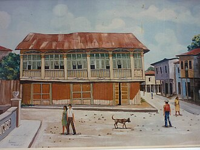

| HOME | GALERÍA | SITUACIÓN GEOGÁFICA | COSTUMBRES | SITIOS TURÍSTICOS |
|---|
🌽Ubicada en el corazón de la provincia de Los Ríos, Ventanas es una ciudad vibrante que destaca por su riqueza agrícola,
especialmente en la producción de maíz, lo que le ha valido el título de Capital Maicera del Ecuador. Fundada
oficialmente el 10 de noviembre de 1952, esta urbe ha evolucionado desde sus raíces coloniales hasta convertirse en un
centro económico y cultural de la región litoral.
Ventanas tiene raíces que se remontan a la época colonial. Se dice que su nombre nació de una casa con muchas ventanas 🪟,
propiedad de un señor Martínez, donde los viajeros serranos se abastecían antes de seguir su camino. Con el tiempo, ese punto
de encuentro se convirtió en un poblado lleno de vida y comercio. Otra versión más poética cuenta que los viajeros decían “vamos a
asomarnos por las ventanas”para ver sus tierras desde las estribaciones montañosas. Así, el nombre quedó grabado en la memoria colectiva 🌄.
|  |